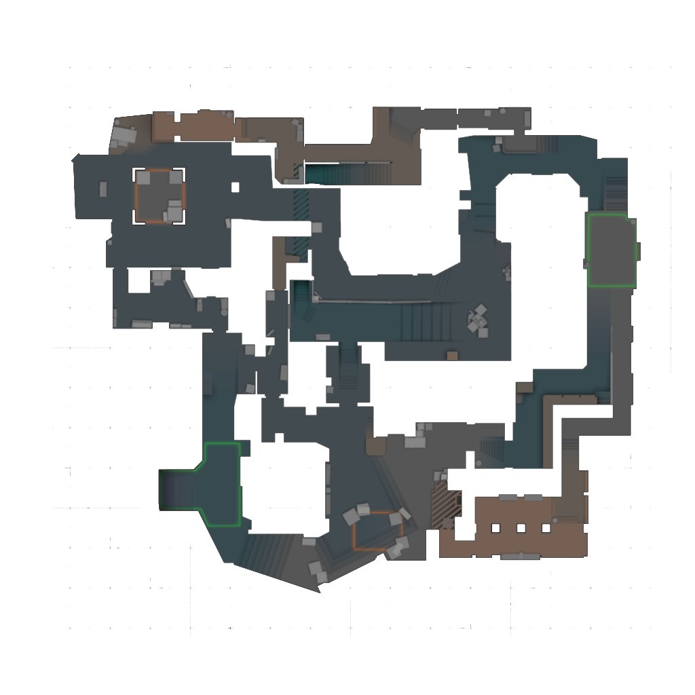
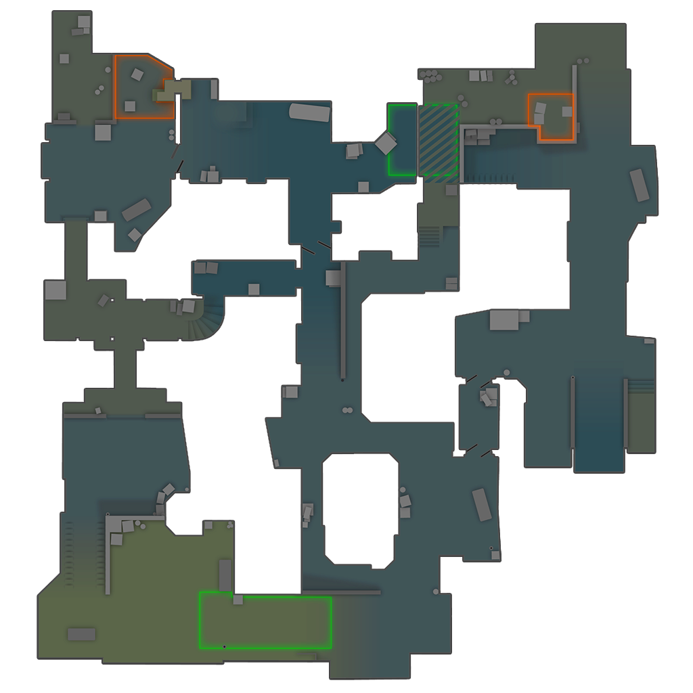
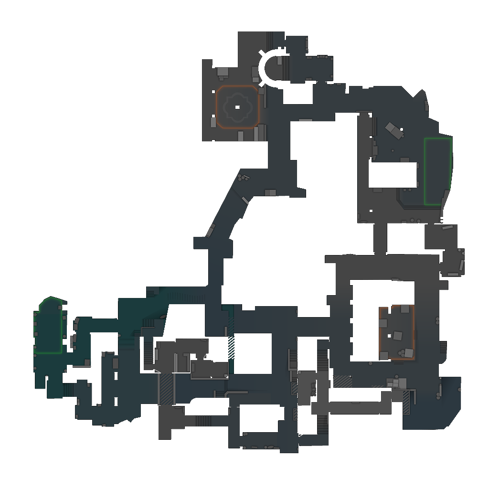

Interactive CS2 Callout Quiz
Practice callouts across 5 modes: Quick 5, Classic 10, All Callouts, Weak-Spot trainer (removes spots only after 3 clean consecutive answers), and the 40-Second C4 Challenge with per-map highscores.
Master Counter-Strike 2 map callouts with interactive quizzes, 40-second C4 rush challenges, and a fast 2D tactic & utility board with 1-click Discord PNG export. Free, offline-ready, no account required.

Practice callouts across 5 modes: Quick 5, Classic 10, All Callouts, Weak-Spot trainer (removes spots only after 3 clean consecutive answers), and the 40-Second C4 Challenge with per-map highscores.
Place precise 2-point throw trajectories for Smokes, Flashbangs, Molotovs, and HE grenades with Left Click, Right Click, Jumpthrow, and Run+Jumpthrow indicators.
Draw team executes, CT setups, and player roles directly on CS2 radars, save presets per map, and export a clean tactical PNG with full legend straight for Discord.

Learn classic Cobblestone callouts and plan fast B executes or A splits.

Full Mirage callout quiz & smoke lineup planner for Window, Jungle, Stairs, and CT.

Train Dust2 mid-to-B splits, Xbox smokes, and A Long callouts under C4 time pressure.

Master 42 detailed Inferno callouts for Banana utility control, B site, and A Apartments.

Updated CS2 Italy radar with 14 clear callout zones for quick orientation and 40s C4 drills.

Includes multi-level radars (Nuke, Train, Vertigo) plus Ancient, Anubis, Overpass, Cache, and Wingman maps.
Available on every map with 10 or more callouts. You have 40 seconds to answer as many highlighted callouts as possible; your personal map highscore tracks how many answers you got right out of all questions asked.
Yes. You can create your own callout zones, draw utility throws and player routes, save team presets locally or via optional Cloud Sync, and export backups or Discord-ready PNG tactic cards.